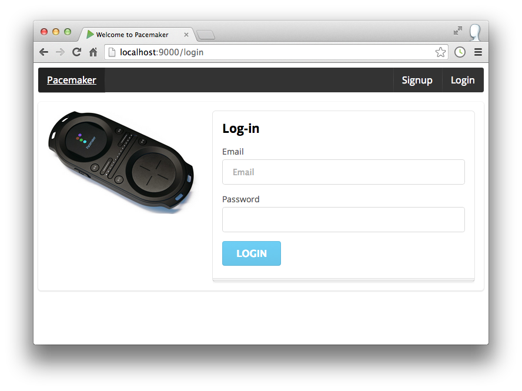
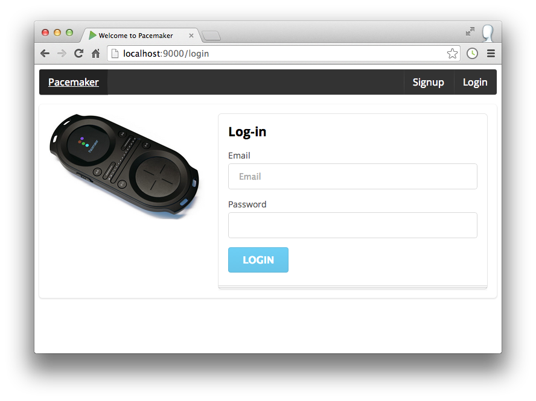

Objectives
Introduce elements of a web UI onto the pacemaker. Rework (in the final archive) the ui into a simple app
Initial Data
Create a new file called 'initial-data.yml' in the conf folder of pacemakerplay. Incorporate the following data:
# Users
users:
- !!models.User
email: homer@simpson.com
firstname: homer
lastname: simpson
password: secret
- !!models.User
email: bart@simpson.com
firstname: bart
lastname: simpson
password: secret
- !!models.User
email: marge@simpson.com
firstname: marge
lastname: simpson
password: secret
- !!models.User
email: lisa@simpson.com
firstname: lisa
lastname: simpson
password: secretIn the app folder (not in any package), introduce this class:
import play.*;
import play.libs.*;
import java.util.*;
import com.avaje.ebean.*;
import models.*;
@SuppressWarnings("unchecked")
public class Global extends GlobalSettings
{
public void onStart(Application app)
{
InitialData.insert(app);
}
static class InitialData
{
public static void insert(Application app)
{
if (Ebean.find(User.class).findRowCount() == 0)
{
Map<String, List<User>> all = (Map<String, List<User>>) Yaml.load("initial-data.yml");
Ebean.saveAll(all.get("users"));
}
}
}
}Now run the app in the usual way - but make sure to run the database browser first (h2-browser command).
Verify that, once the app is launched, the user table is populated with the above values.
Can you forsee (in your JUnit tests) any potential problems by adding in initial data into our database?
Run your tests to see what happens. Make any necessary changes to your tests based on having initial starting data.
Semantic UI
Visit Semantic UI github account:
and download as a zip archive. Expand the archive, which should look like this:

Open the pacemakerplay project in eclipse, and expand the 'public' folder:

Now drag and drop the 'dist' folder from the semantic ui download, and drop it into the public folder. On the way you will get this dialog:

Make sure to select 'copy' as shown. Once it is copied over, rename the 'dist' folder to 'semantic'
You may get an error during the renaming of 'dist' to 'semantic'. This will result in the 'dist' folder remaining in your public folder. Check that it is only folders left in 'dist' (i.e. no files remain after the rename) and delete the 'dist' folder.
Using Semantic css
We can now include the semantic css into our ui by changing views/main.scala.html as follows:
@(title: String)(content: Html)
<!DOCTYPE html>
<html lang="en">
<head>
<title>@title</title>
<link rel="stylesheet" media="screen" href="@routes.Assets.versioned("semantic/semantic.css")">
<link rel="stylesheet" media="screen" href="@routes.Assets.versioned("stylesheets/main.css")">
<link rel="shortcut icon" type="image/png" href="@routes.Assets.versioned("images/favicon.png")">
<script src="@routes.Assets.versioned("javascripts/hello.js")" type="text/javascript"></script>
<script src="@routes.Assets.versioned("semantic/semantic.min.js")"></script>
</head>
<body>
@content
</body>
</html>We have just entered two extra lines above - a new stylesheet included before the existing one and a javascript after the hello.js include.
To test this, we will change the index file views/index.scala as follows:
@(message: String)
@main("Welcome to Pacemaker") {
<div class="ui segment">
<p> @message </p>
</div>
}You may need to do a clean on your compile to pick up the changes, prior to running the app:
activator clean compile
activator runThis should display the greeting in a simple segment:
Introduction to segments here:
The above page is rendered in response to / request as mapped in the routes file:
GET / controllers.Application.index()... this is the controller itself:
public class HomeController extends Controller {
public Result index() {
return ok(index.render("Welcome to Pacemaker Web 1.0"));
}
}See if you can follow the logic of the page creation - particularly the relationship between:
- HomeController.java
- index.scala.html
- main.scala.html
Passing Parameters to the View
Instead of passing a string in the HomeController controller:
return ok(index.render("Welcome to Pacemaker Web 1.0"));We could send the list of users:
List<User> users = User.findAll();
return ok(index.render(users));This will generate a syntax error:
[error] C:\Users\Siobhan\Dropbox\2016-2017\agile\workspace-play\pacemakerplay-lab11b\app\controllers\HomeController.java:24: java.util.List<models.User> cannot be converted to java.lang.String
[error] return ok(index.render(users));The reason this error is generated is the template is expecting a String:
@(message: String)
@main("Welcome to Pacemaker") {
<div class="ui segment">
<p> @message </p>
</div>
}Change this to expect a list:
@(users: List[User])
@main("Welcome to Play") {
<div class="ui segment">
<p> </p>
</div>
}Compile these changes; it should compile now.
Run activator test. Our renderTemplate in ApplicationTest fails:
[error] C:\Users\Siobhan\Dropbox\2016-2017\agile\workspace-play\pacemakerplay-lab11b\test\ApplicationTest.java:39: java.lang.String cannot be converted to java.util.List<models.User>
[error] Content html = views.html.index.render("Welcome to Pacemaker Web 1.0");Comment out this test for the moment.
Run activator test again. Now you should have two other failed tests:
[error] Failed: Total 16, Failed 2, Errors 0, Passed 14
[error] Failed tests:
[error] controllers.HomeControllerTest
[error] IntegrationTest
[error] (test:test) sbt.TestsFailedException: Tests unsuccessful
[error] Total time: 69 s, completed 21-Nov-2016 16:14:42From the output of your tests, can you figure out what happened?
Basically, we changed the index method of HomeController to interrogate the database, however, our HomeControllerTest above don't have a fakeApplication started. Make these changes to HomeControllerTest:
public class HomeControllerTest extends WithApplication{
@Test
//Testing the index method to ensure the home page of the
//application is rendered correctly
public void testIndex() {
Result result = new HomeController().index();
assertEquals(OK, result.status());
assertEquals("text/html", result.contentType().get());
assertEquals("utf-8", result.charset().get());
assertTrue(contentAsString(result).contains("Welcome to Pacemaker"));
}
}The IntegrationTest.java file was generated by Play. Really, we don't need the test in this class as we have covered this test in another class. You can delete this whole file.
Run the tests again.
Once you have successful tests, run the application and verify that your localhost starts and the initial-data is displayed on your home page.
Displaying the Users List
The templating language - used to generate the actual html pages - is a very simple subset of Scala.
The above guide - just a single page of documentation - is probably all you need to know.
Here is a revised version of index.scala.html to generate a list of users as a <ul>:
@(users: List[User])
@main("Welcome to Pacemaker") {
<div class="ui segment">
<ul>
@for(i <- 0 until users.size) {
<li>
@users(i).firstname @users(i).lastname </a>
</li>
}
</ul>
</div>
}Run the app now, and we should see the list:

or we can display this as an elegant table using semantic ui:
Here is a revised layout using a table:
@(users: List[User])
@main("Welcome to Pacemaker") {
<table class="ui table segment">
<thead>
<tr>
<th>First Name</th>
<th>Last Name</th>
</tr>
</thead>
<tbody>
@for(i <- 0 until users.size) {
<tr>
<td> @users(i).firstname</td> <td> @users(i).lastname </td>
</tr>
}
</tbody>
</table>
}
Routing to a New View
This is a revised version of index.scala.html:
@(users: List[User])
@main("Welcome to Pacemaker") {
<h1 class="ui header">Pacemaker</h1>
<table class="ui table segment">
<thead>
<tr>
<th>First Name</th>
<th>Last Name</th>
</tr>
</thead>
<tbody>
@for(i <- 0 until users.size) {
<tr>
<td> @users(i).firstname</td> <td> @users(i).lastname </td>
</tr>
}
</tbody>
<tfoot>
<tr>
<th colspan="2">
<a class="ui blue labeled icon button" href="">
<i class="user icon"></i>
Add User
</a>
</th>
</tr>
</tfoot>
</table>
}It includes a header:
and a button:
which is positioned at the last row:
In our code above, the href in the button is blank, so we can suggest a new route:
<a class="ui blue labeled icon button" href="/users/adduser">We can specify a matching route + controller action in conf/routes (just after the root route):
GET /users/adduser controllers.HomeController.addUser()To wire this up, we need a new method in the HomeController controller:
public Result addUser()
{
return ok(adduser.render());
}and this is a new view called adduser.scala.html:
@()
@main("Add User") {
<p> Add User Form </p>
}Compile these changes and when you run the app, the new view should be displayed.
Form Design
Forms can be assembled cleanly in Semantic UI:
Here is a replacement for adduser.scala.html:
@()
@main("Add User") {
<div class="ui form segment">
<div class="two fields">
<div class="field">
<label>First Name</label>
<input placeholder="First Name" type="text" name="firstname">
</div>
<div class="field">
<label>Last Name</label>
<input placeholder="Last Name" type="text" name="lastname">
</div>
</div>
<div class="field">
<label>Email</label>
<input placeholder="email" type="text" name="email">
</div>
<div class="field">
<label>Password</label>
<input type="password" name="password">
</div>
<input type="submit" class="ui blue submit button" value="Submit">
</div>
}When you run the application, your http://localhost:9000/users/adduser should now look like this:

Clicking the submit button on this form does nothing. When we click this button, ideally we would like to be redirected back to our home page (we will look at form input in the next step).
To do this, we would need to encapsulate it on a standard <form> element, and define associated action and method attributes:
<form action="/users/submituser" method="POST">
...
</form>Place the above code around our outer div.
For this to work, we will need a route:
POST /users/submituser controllers.HomeController.submitUser()and a corresponding action:
public Result submitUser()
{
return redirect ("/");
}Compile and run these changes.
This should work - and pressing the submit button should take us back to the users list page.
Form Input
Form handling in Play is well supported, and does not require significant boilerplate code.
In the HomeController class, update the submitUser() method to this:
public Result submitUser()
{
Form<User> boundForm = Form.form(User.class).bindFromRequest();
User user = boundForm.get();
user.save();
return redirect ("/");
}This method recovers the user entered data, reads it into a new User object, which we then save. The only requirement is that we keep the names of the user members directly aligned with the 'name' attributes in the <input> elements in the form:
public class User extends Model
{
//...
public String firstname;
public String lastname;
public String email;
public String password;
//...
} //...
<input placeholder="First Name" type="text" name="firstname">
//...
<input placeholder="Last Name" type="text" name="lastname">
//...
<input placeholder="email" type="text" name="email">
//...
<input type="password" name="password">
//...We should now have a simple UI, listing out the users. If we press the "Add User" button, then we should see a form which, if filled out, will take us back to the user page - to now include a new user.
Links
Our list of users could be extended to include links so we can inspect each users details.
First introduce a new supporting route:
GET /users/showuser/:id controllers.HomeController.showUser(id : Long)Then the template, call showuser.scala.html:
@(user : User)
@main("user") {
}and finally the matching controller action:
public Result showUser(Long id)
{
User user = User.findById(id);
return ok(showuser.render(user));
}This is an example of a paramaterised route (it takes an id) which serves an html page. We can now enable the user list page such that each user is a link (with the correct id) to this route: Edit index.scala.html - and rework the for loop as follows:
@for(i <- 0 until users.size) {
<tr>
<td> <a href="/users/showuser/@users(i).id"> @users(i).firstname </a> </td>
<td> @users(i).lastname </td>
</tr>
}Notice how we embedded the users first name in an<a> tag - with the correct route.
Run this now - and the first names of each user should be a link, taking us to a blank page.
Here is a version of showuser.scala.html` that renders some of a user details:
@(user : User)
@main("user") {
<div class="ui form segment">
<div class="two fields">
<div class="field">
<label>First Name</label>
<input value= @user.firstname type="text" name="firstname" readonly>
</div>
<div class="field">
<label>Last Name</label>
<input value= @user.lastname type="text" name="lastname" readonly>
</div>
</div>
<div class="field">
<label>Email</label>
<input value= @user.email type="text" name="email" readonly>
</div>
</div>
}This should work now as expected.
Note, there is no location class included in this solution; it only contains user and activity.
Enhanced UI Version
This archive can replace the version you may have been developing during this lab:
Download, expand it, and run it. Browse to:
Expect to see an UI like this:
 



You may use this zip as the starting point for your assignment.